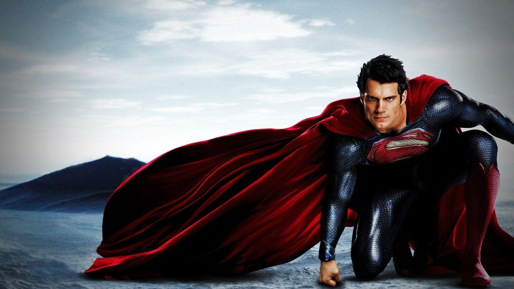

Superman : Is he an alien?

Upon moving to Metropolis, Clark took a job at the Daily Star and
prepared himself to act as a vigilante at the age of 22,[4] by having
several shirts printed with the S-Symbol that had come to Earth with
him emblazoned on them. His attempt to rescue a young boy caused him
to reveal himself before he expected to, and the city came to know of
the superhuman man.[5] Within six months, Clark had fully revealed
himself and was targeting corrupt businessman Glen Glenmorgan when
General Sam Lane and Lex Luthor took an interest in him. They staged
several emergencies to trap him, finally succeeding with a train crash
that endangered the General's own daughter Lois.[6] In collaboration
with the military, Luthor tortured Superman while his Kryptonian
Rocket was studied. Upon his escape, Superman sealed his birth rocket
away for protection but was too late to prevent its Kryptonian signal
from alerting the Collector of Worlds to its location - and unaware
that Luthor was complicit in making that happen.
Dawn of Justice?
Kal-El, the Last Son of Krypton born to scientists Jor-El and Lara
Lor-Van, was sent in a rocket to Earth as their home planet was
destroyed. Kal's rocket landed in Smallville, Kansas, where he was
discovered by Jonathan and Martha Kent. He was given the name "Clark
Kent" and adopted as their son. Clark learned of his alien origin as
he grew up and learned to use his powers in secret. On the night of
his senior prom, because his adoptive parents discouraged Clark from
becoming a superhero for fear what it could do to him, he failed to
save Jonathan and Martha from dying in a car accident. However, in a
further revision to Superman's origin over one year later, Doctor
Manhattan went through time and saved Alan Scott from dying in a train
accident, allowing him to become the first Green Lantern and assemble
the Justice Society of America in the 1900s and set a good example for
superheroes to come in the future. With role models to look up to and
no reason to stay in hiding, on the night of his senior prom, Clark
saved his adoptive parents from dying in a car accident.[87] As an
adult, Clark moved to Metropolis and adopted the name "Superman". He
started a job as a reporter at the Daily Planet where he met Lois
Lane. The two fell in love, and he revealed his secret identity to
her. Sometime after, Superman was seemingly killed by Doomsday and
returned to life. Afterwards, Clark and Lois got married. At one
point, Superman's powers malfunctioned and he temporarily became
Electric Blue Superman before returning to normal.[88] Later, Lois
became pregnant with a child, and Clark delivered his son Jonathan
Samuel Kent in the Fortress of Solitude.[86]